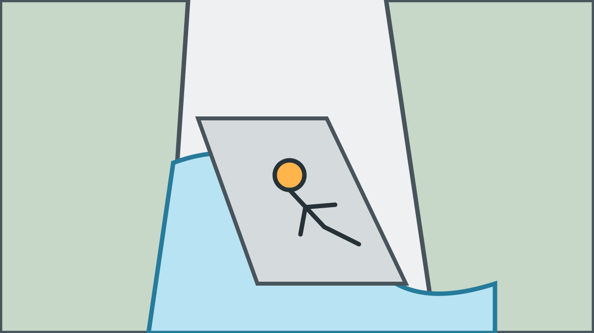
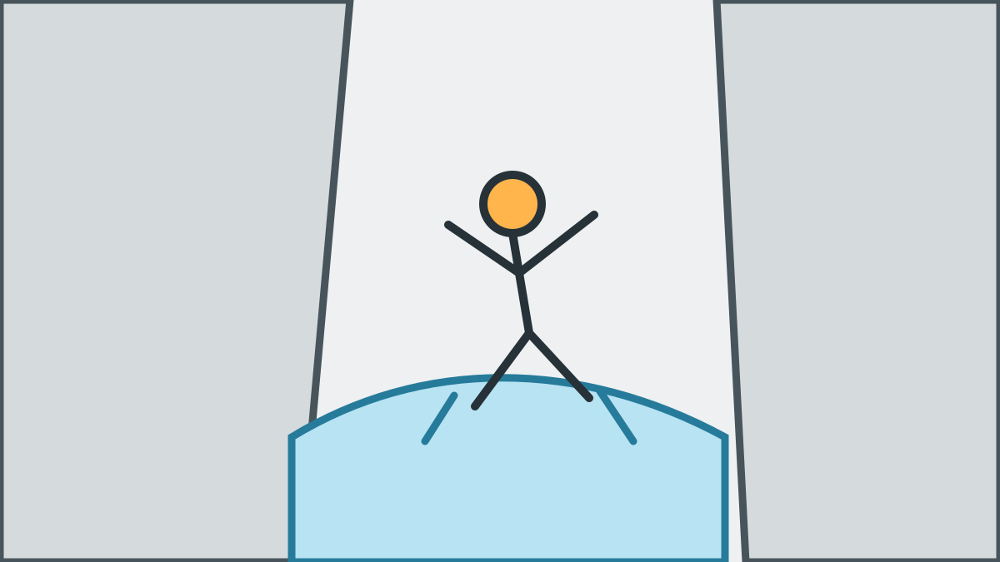

Welche Canyoning-Tour passt zu eurem JGA?
Unsere Schwierigkeitsskala ist eine eigene Orientierung und keine offizielle Norm: 2 von 5 ist ideal für Einsteiger und alle, die sich langsam ans Canyoning herantasten möchten, 3 von 5 für sportliche Einsteiger und 4 von 5 für sehr fitte Gruppen mit hoher Ausdauer.
Direktvergleich
| Tour | Schwierigkeit | Dauer | Abseilen | Sprünge | Rutschen | Schwimmen | Preis |
|---|---|---|---|---|---|---|---|
| Merlins World | 2 von 5 | ca. 4 Stunden | bis 12 m | bis 7 m | bis 5 m | bis 10 m | 100 € p. P. |
| Kangaroo Jump | 3 von 5 | ca. 4 Stunden | bis 20 m | bis 10 m | bis 6 m | bis 30 m | 100 € p. P. |
| Kobelache Intensiv | 4 von 5 | ca. 5,5 Stunden | bis 20 m | bis 10 m | bis 6 m | bis 30 m | 150 € p. P. |
| Tessin | 4 von 5 | je nach Tour | bis 80 m | bis 20 m | bis 20 m | bis 50 m | auf Anfrage |
Bei jeder Tour: euer Sorglos-Paket
Alle Angaben zu Elementen sind Maximalwerte der jeweiligen Tour. Sprünge sind freiwillig und können umgangen werden. Alle Touren sind privat. Ab Treffpunkt organisieren wir Ausrüstung mit Canyoning-Schuhen, Transfer, Fotos, Videos, Snack und Getränke danach. Ihr bringt nur Badekleidung, Handtuch und Wechselkleidung mit.
Persönliche Toureinordnung per WhatsApp erhalten
Merlins World
2 von 5 · ca. 4 Stunden · 100 € p. P.
Ideal für Einsteiger und alle, die sich langsam ans Canyoning herantasten möchten: natürliche Rutschen bis 5 Meter, Abseilen bis 12 Meter, freiwillige Sprünge bis 7 Meter und kurze Schwimmstrecken bis 10 Meter.

Kangaroo Jump, unsere Empfehlung
3 von 5 · ca. 4 Stunden · 100 € p. P.
Die beste Mischung aus Action und machbarer Herausforderung für die meisten sportlichen JGAs: Abseilen bis 20 Meter, Rutschen bis 6 Meter, freiwillige Sprünge bis 10 Meter und Schwimmstrecken bis 30 Meter.

Kobelache Intensiv
4 von 5 · ca. 5,5 Stunden · 150 € p. P.
Die lange, fordernde Kobelache-Tour für sportliche Gruppen mit Ausdauer: Abseilen bis 20 Meter, Rutschen bis 6 Meter, freiwillige Sprünge bis 10 Meter und Schwimmstrecken bis 30 Meter.

Tessin
4 von 5 · Dauer je nach Tour · Preis auf Anfrage
Die individuelle Spezialtour für sehr ambitionierte und sehr fitte JGAs. Je nach gewählter Schlucht sind Abseiler bis 80 Meter, Rutschen und Sprünge bis 20 Meter sowie Schwimmstrecken bis 50 Meter möglich.